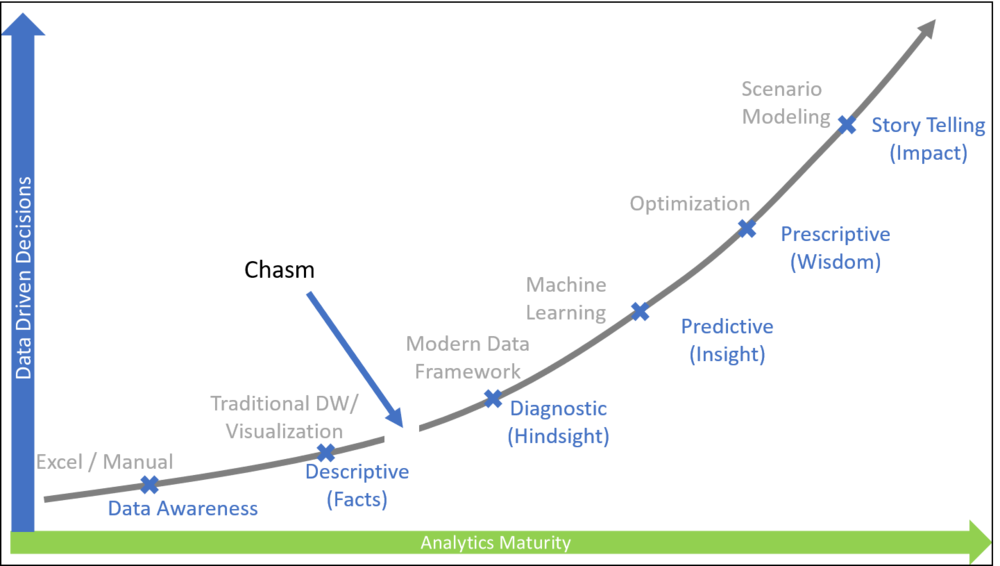

Analytics Maturity (Part 2) - Crossing the Chasm

In my last post I wrote about the analytics maturity and how there is a gap/chasm in the curve which makes it difficult for the enterprise to move from traditional BI/descriptive level to the more modern value driven analytics. Read the post Analytics Maturity (Part 1) - Introducing the Chasm.

Following are the key reasons that makes it difficult for organizations to move from bottom of the maturity or from descriptive analytics to more mature state where enterprises use multiple internal and external data sources, advance storage media, complex compute technologies and sophisticated AI tools and frameworks to make better data driven decisions.
-
Huge capex investments in existing BI tools and hardware which makes it difficult to have a business case to invest in new technology
-
Huge cost of re-architecture and re-design of the solutions to move to cloud
-
No clear understanding of roadmap and thus making data teams focus on too many things at the same time
-
Fear of missing out (FOMO) on AI and ML which causes unprecedented chaos
-
Lack of skills on cloud technologies and thus general fear of unknowns
In this post I will cover the key steps organizations can take to cross that hurdle/chasm and move ahead of the roadblock and prepare the foundation which will enable them to move along the curve. The forward-looking state assumes the use of technology provided by major cloud providers such as Azure/AWS/GCP to achieve analytics enabled organization which make data driven decisions.
Following are the key ingredients organizations should invest in to leap to more mature analytics organization
Low investment High Value Opportunities
More mature organizations might need use of sophisticated technology and frameworks and that might relate to bigger investment, but it is not necessary to start from there. There are ways where organizations can start on small investment but high impact projects and slowly build the foundation for future.
One way to do this is by enabling the business focused analytics, using tools such as Power BI and Tableau. These tools provide the capability to use data from multiple sources and provide easy ways to manipulate data to enable rich visualizations for business users. These tools can be used for both descriptive and diagnostic analytics and enable the end users to see the art of possible. The investment is minimal, but the end users get used to more advanced tools and don’t have to wait for months and rely of IT teams to build 1-2 BI reports for them. This provides high value to end users while keeping the starting investment minimal
Invest in the Data Hub/Lake
While business users explore the self service and advanced BI tools, IT organizations should explore the possibility of using advanced storage media and concepts of data lake to consolidate data from various source systems and move it in one place. This will be key to move to next level and will make it easier to move to next level. Data lakes have also become key to
Understand your Technical Debt
Cloud technologies come with a promise of one stop shop to solve all the technology problems in the organization. However, it is not true. All cloud vendors are good in few areas and need support from external technology in other areas. For example, Microsoft may have a better reporting solution (Power BI) but might lack in more mature big data clusters. Amazon might have better compute and management but might need stronger ETL and reporting capabilities. Organizations will end up investing in more technology than just the cloud “(x)aas” services. These are supplementary technologies and it creates extra technical debt that needs to be managed in longer term.
The trick here is to evaluate the technologies which are necessary for the roadmap. Work with the cloud providers to check if any similar solutions are on the near-term roadmap which can be leveraged. Even if you can afford the initial cost of the supplementary technology, the increase in the technical debt will make it difficult to manage in longer term
Structure your Team
Given the technology shift that is happening and the speed and agility needed to compete in today’s digital world, it has become far more important to have team that can deliver solutions faster and help achieve business outcomes. Reducing the overhear and faster time to market is the ask from business and IT teams needs to be restructured to support that. Read my article “Redesigning Enterprise Analytics Teams“ to understand how can analytics team of cloud generation can be structured.
Train and Learn
One of the important steps in starting the journey is to ensure that all the stakeholders understand and acknowledge any challenges in the current solutions. The users and the data team stakeholders need to understand the shift in technology landscape and learn the upcoming technologies on cloud platforms such as Azure, AWS and GCP. Even if the organizations rely heavily on consultants, internal teams need to be trained on the technology to make better investment decisions.
Leverage the trainings and partners to ensure that the internal teams are well versed with the technology and can make informed decisions.